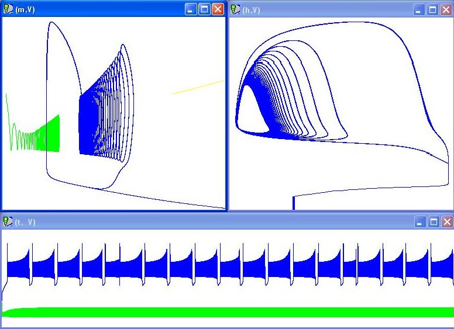

This is the readme for the model associated with the paper: Channell P, Fuwape I, Neiman AB, Shilnikov AL (2009) Variability of bursting patterns in a neuron model in the presence of noise. J Comput Neurosci 27:527-42 Two alternate ways to run the model: 1) The authors used the "CONTENT" dynamical systems tools: ftp://ftp.cwi.nl/pub/CONTENT/ Install and run CONTENT, and import the file included in this archive: Neuron-blue-all-average-with-bifur-parameter.es 2) There is a simpler installation solution for systems of odes - "dynamical solver" for windows http://tp.lc.ehu.es/jma/ds/ds.html Install dynamical solver then open the file included in this archive: leech_blue_bistability.ds Selecting Start->Go will generate these figures demonstrating a particular choice of parameters (see the .ds file for settings) for the model:  These files were contributed by Andrey Shilnikov.